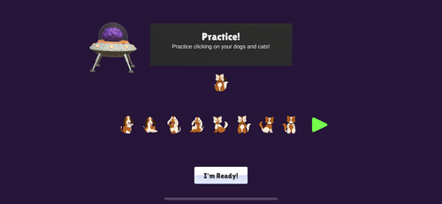
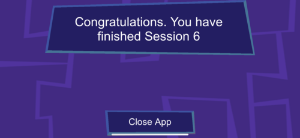
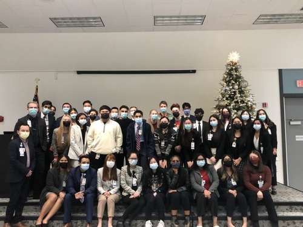
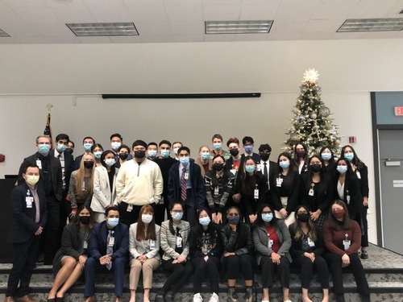

Aditi Mekala
Current Neuroscience Major
I am a current 4th year undergraduate at the University of California, Riverside in the College of Natural Sciences majoring in Neuroscience. I am also a research assistant in the Brain Game Center lab on campus. Their studies focus on improving brain function in a variety of categories such as working memory, hearing and vision studies as well as inhibition control. I have helped participate in running participants in batteries that involve catching hearing loss early and improving technology to assist in degeneration of brain functions through the use of games. I have participated in a poster project about one of the studies in the lab with a postgraduate student that has to do with the validity of an auditory test battery of assessments and how well it translates into a game form to help find hearing loss at an early age while also making audiology testing more accessible to the public. I am also an active volunteer in the COPE Health Scholars program at Riverside Community Hospital, a volunteer program that helps students experience a wide variety of clinical floors and patient interaction to assist in their future as a physician or other healthcare professional. My future career aspirations do include going onto medical school and eventually becoming a physician, potentially specializing in diagnostic radiology or neurology. Additionally, I am part of the leadership team at COPE, as part of the Administration team as the Alumni Coordinator. My role includes getting in touch with all scholars that would like to graduate the program and help them transition out of the program in good standing as well as assisting all our Alumni with certificate retrieval and any program hours confirmations or letters of recommendation they need for potential jobs or professional schools. All of these aspects help me in focusing my activities for my eventual move into becoming a physician; however I have also gained proficiency in Microsoft Word, Excel, and Powerpoint as well as Canva and Mailchimp due to the nature of my work in the COPE Program.
My overall strengths include being very diligent in my work as well as being very detail oriented and proactive in completing work. My weaknesses include being a little bit of a procrastinator as I want to make sure the work is as good as I can possibly get it before submitting, which may cause my work to be very close to the deadlines and may result in possible missed deadlines. However, I am working on improving my timeliness and getting other’s perspectives on my work in order to speed up the quality checking process so I can have confirmation that my work is the best it can be while also submitting it on time. Additionally, I have proficiency in multiple languages that are not English at a very basic conversational level through self study and prior school study. I can speak conversational Korean and understand Spanish as well as Telugu as it is my home language. This proves very useful especially in the hospital setting as I can interact and more effectively communicate with patients that may not speak English as their first language. I am also trying to learn Japanese and possibly either Chinese or Thai due to my interest in the media and usefulness in the clinical setting.
Experience
Research Assistant
• Assisted in running particpants in study battery of assessments for hearing loss
• Worked on poster project about validity of PART application and study
• Experience with BGC apps and Rstudio
Health Scholar
• Assisted healthcare professionals in patient care in scope of practice
• Watched procedures with permission of staff including C-sections and vaginal birth
Alumni Coordinator
• Coordinated with Alumni with hours audit requests and fulfilled them
• Liasoned between program and alumni scholars
• Assisted in distribution of program completion certificates
• Commanded a cohort of around 50 scholars every quarter
Education
University of California Riverside
Portfolio




